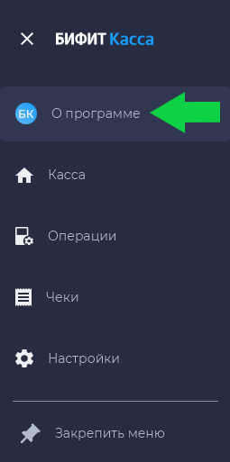

Установка и настройка приложения «Касса Розница» Windows/Linux
Сокращения¶
ККМ – Контрольно-кассовая машина
ККТ – Контрольно-кассовая техника
РМК – Рабочее место кассира
ОФД – Оператор фискальных данных
ФН – Фискальный накопитель
ЦТО – Центр технического обслуживания
POS-терминал — платёжный терминал, (Point of Sale — точка продажи)
TCP/IP — Transmission Control Protocol/Internet Protocol, протокол управления передачей/протокол интернета
Введение¶
Данное руководство описывает процедуру настройки приложения «Касса Розница» для платформ Windows/Linux и включает в себя следующие шаги:
- установка;
- подключение и настройка кассового аппарата;
- подключение банковского POS-терминала.
В качестве ККМ использован фискальный регистратор АТОЛ 15Ф.
Подготовка¶
«Касса Розница» для платформ Windows/Linux поддерживает несколько вариантов подключения кассового аппарата:
- Подключение в COM-порт.
- Подключение в USB-порт с эмуляцией COM-порта.
- Подключение по протоколу TCP/IP.
- Подключение в USB-порт с эмуляцией протокола PPP/RNDIS.
1. Подключение в COM-порт¶
Типовая схема подключения. Если ваш ПК и кассовый аппарат оснащены COM-портами, вы можете подключить кассовый аппарат посредством кабеля RS-232, который входит в комплект поставки.
2. Подключение в USB-порт с эмуляцией COM-порта¶
Схема подключения, при которой вместо кабеля RS-232 используется USB-кабель.
Способ подключения аналогичен предыдущему пункту, но, возможно, придётся установить дополнительный драйвер USB2COM, преобразующий USB-соединение в виртуальный COM-порт.
3. Подключение по протоколу TCP/IP¶
Если ваш кассовый аппарат оснащён Ethernet или Wi-Fi, вы можете подключить его в локальную сеть и работать с ним, обращаясь по протоколу TCP/IP.
4. Подключение в USB-порт с эмуляцией протокола PPP/RNDIS¶
При такой схеме используется подключение по USB-интерфейсу. Вместо виртуального COM-порта система автоматически организует новое сетевое подключение, в котором в качестве нового участника сети выступает кассовый аппарат.
В этом случае кассовый аппарат получает свой собственный IP-адрес и обмен с ним происходит по протоколу TCP/IP.
Установка¶
- Перейдите в Центр загрузок БИФИТ Касса.
- Прокрутите страницу вниз до разделов Касса Розница Desktop x64 / Касса Розница Desktop x86.
- Выберите подходящий установочный файл.
Или скачайте один из следующих установочных файлов:
Запустите установочный файл и следуйте инструкциям установщика.
Запуск приложения¶
При первом запуске приложения введите данные учётной записи.
Важно!
Учётную запись сотрудника создаёт руководитель организации или другой пользователь с правами администратора в личном кабинете БИФИТ Касса.
Настройка прокси-сервера¶
Если в вашей сети используется подключение через прокси-сервер, после запуска приложения необходимо произвести дополнительные настройки.
При запуске приложения нажмите на иконку с изображением шестерёнки в правом верхнем углу окна. Откроется окно настройки.
Выберите пункт Использовать прокси и заполните параметры подключения.


Нажмите кнопку Сохранить для завершения настройки.
Вход в приложение¶
- Введите данные учётной записи — телефон и пароль.
- При первом запуске приложения можно активировать опцию Установить код для входа для защиты от несанкционированного входа.
Если эта опция активирована, вы перейдёте на экран установки кода доступа. Установите код и повторите его.
При последующем запуске приложения будет осуществлён «быстрый» вход без ввода логина и пароля — только с кодом.
- Выберите организацию и торговый объект. Если в приложении задана одна организация или один торговый объект, то приложение выберет их автоматически.


Произойдёт переход на экран РМК.

Подключение оборудования¶
Подключение ККТ¶
Чтобы подключить кассовый аппарат, на начальной странице приложения в разделе Онлайн-кассы необходимо скачать плагин Адаптер для подключения ККТ.
- На экране РМК перейдите в меню разделов.
- Выберите раздел О программе.
- В доступных плагинах в разделе Онлайн-кассы выберите адаптер и нажмите Установить.
- Перезапустите приложение, чтобы изменения вступили в силу. После перезапуска плагин станет отображаться в графе Установлено.
- Перейдите в раздел Настройки.
- Выберите пункт ККТ Подключение кассы с левой стороны (первый пункт) и добавьте подключение внизу справа, нажав на +.
- Выберите установленный плагин, введите данные.
- Проверьте связь с кассовым аппаратом, нажав Проверить.
- Если подключение установлено, нажмите Сохранить.




Подключение банковского терминала¶
Перед подключением банковского POS-терминала к приложению убедитесь, что на вашем ПК установлен и настроен соответствующий драйвер. Например, для POS-терминалов ИНПАС – DualConnector, для терминалов INGENICO – ARCUS2.
Важно!
Терминал должен быть предварительно настроен сотрудниками банка. В терминале должен быть включён режим сопряжения с ПК по USB или Ethernet.
Настройка DualConnector на ПК с Windows¶
- Перейдите на сайт компании ИНПАС.
- На верхней панели нажмите на раздел Программное обеспечение.
- В появившемся списке выберите Дополнительное ПО.
- На открывшейся странице нажмите на раздел Материал для скачивания.
- Нажмите на Ссылку для скачивания ПО.
- В открывшемся хранилище выберите папку Integrirovannye kassovye resheniya.
- В папке скачайте ZIP-архив DUALConnector (Common Connectors Installer).
- Откройте скачанный ZIP-архив на своём устройстве.
- Запустите файл Common Connectors Installer. В диалоговом окне выберите Извлечь всё.
- В открывшейся папке с извлечёнными файлами откройте инструкцию Instrukciya_po_ustanovke_DUALConnector.
- Запустите файл Common Connectors Installer и следуйте пунктам инструкции 3 и 4.
Настройка платёжного терминала¶
- Для подключения терминала необходимо установить соответствующий плагин-адаптер из списка доступных в приложении. После установки плагина перезапустите программу, чтобы изменения вступили в силу.
- Перейдите в настройки, выберите пункт Платёжные терминалы с левой стороны окна и справа внизу нажмите + для создания нового подключения.
- Выберите необходимый плагин и введите идентификатор терминала.
- Проверьте правильность подключения, нажав Проверить. Если всё корректно – нажмите Сохранить.


Подключение сканера штрихкода¶
Воспользуйтесь инструкцией сканера, чтобы определить принцип работы:
- режим эмуляции клавиатуры
- режим эмуляции COM-порта
Режим эмуляции клавиатуры¶
Подключите сканер к устройству — дополнительные настройки не требуются. Сканер будет работать как клавиатура: при сканировании штрихкод автоматически вводится в активное поле.
Режим эмуляции COM-порта¶
- Подключите сканер к компьютеру.
- Переключите сканер в режим USB-com (см. инструкцию сканера).
- На рабочем столе компьютера нажмите Пуск и выберите Диспетчер устройств.
- Посмотрите номер COM-порта в разделе Порты (COM и LPT).
- В приложении Касса Розница перейдите в раздел Настройки → Дополнительно.
- В разделе Оборудование выберите COM-порт подключенного сканера.


Сканер подключен и готов к работе.
Интеграция с ТС ПИоТ¶
Установка¶
- В боковом меню перейдите в раздел О программе.
- В списке доступных расширений выберите Интеграция с ТС ПИоТ и нажмите Установить.
- Перезапустите приложение.


Настройка¶
- Перейдите в раздел Настройки → Расширения.
- В списке расширений выберите плагин Интеграция с ТС ПИоТ.
- Укажите адрес сервера, на котором модуль ТС ПИоТ принимает запросы, и версию протокола ТС ПИоТ. Например,
https://localhost:51401/. - Нажмите Проверить соединение. При правильной настройке будут отображены параметры ККТ, с которой работает ТС ПИоТ.
- Нажмите Сохранить и перезапустите приложение.

Работа с ТС ПИоТ¶
Результаты проверки отображаются в окне формирования чека после нажатия Оплатить.
Если результат проверки отрицательный, кассир может исключить заблокированные к продаже товары и продолжить пробитие чека без них.